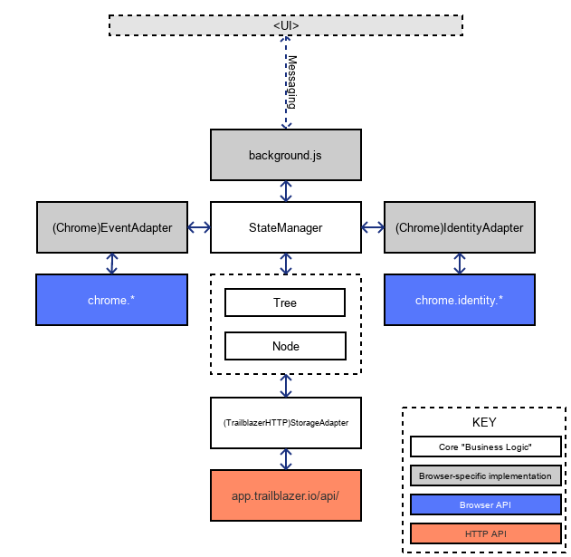

Trailblazer "Wash"
Trailblazer is a Chrome extension built to track a user's browsing activity and build up a map, helping them make sense of the places they visit.
Structure
The extension is structured in the following way:

The diagram above shows two distinct parts of the extension:
- Browser-specific adapter and glue code
- Agnostic core logic (a.k.a. "Business Logic")
The browser specific code handles things like the UI, messaging between UI and StateManager, and interfacing with browser APIs. The majority of non-UI code under these blocks is glue-code used to translate browser-specific actions and events into ones that the core can use without sacrificing portability.
The core itself houses the state of the application, and manages any transactions to do with identity/auth and resource persistence.
StateManager
This is the main entry point into having a functioning instance. It is documented in more detail over in its JSDoc page, however the brief summary is that it is instantiated inside background.js and the appropriate adapters are specified (e.g. ChromeEventAdapter, ChromeIdentityAdapter) so that it can properly integrate with the browser.
background.js
This is the main interface between the StateManager and the rest of the interface. UI components pass messages to this long-running background script to effect state changes (e.g. stop a Tab's recording session) and retrieve data (e.g. get the current Node).
Documentation
The source is documented with JSdoc, whose output is in /doc.
To generate new documentation, ensure you have jsdoc installed (the dependency is specified in package.json)
$ npm installThen annotate your source and run the shell script (you'll need bash
available)
$ ./doc.shThis will clear existing documentation, and assemble a new build using the
jsdoc binary inside node_modules/.